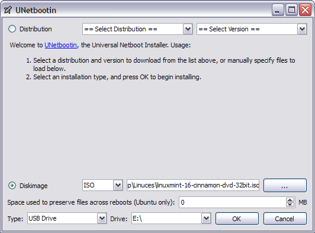

Getting Started with Linux Mint
For most of our programming stuff, we'll be using Linux Mint because Python comes pre-installed in it. Linux Mint is what's called an ~operating system~ (sometimes abbreviated as "OS"), which is a special kind of software environment that runs on a computer. Microsoft Windows is another (and much more well-known) operating system. In most cases, an operating system gets installed on a computer's hard drive. When the computer starts up, it looks on the hard drive for an operating system to run. In our case, however, we'll be putting the Linux Mint OS on a flash drive, and then asking our computers to look on the flash drive for an operating system to boot. Here are the steps needed to make that happen.
1. Get Linux Mint
First, we need to download the Linux Mint OS LiveDVD image. We'll be using the version found here. It's a pretty big file, so don't be surprised if it takes a while to download.
2. Get Unetbootin
Unetbootin is a tool that can write floppy, LiveCD, and LiveDVD images to flash drives. It can be downloaded here.
3. Copy Linux Mint to the Flash Drive
Start the Unetbootin program, click on the "..." button to navigate to the Linux Mint ISO file that you downloaded, select your flash drive letter in the "Drive:" drop-down box, and click "OK".

4. Boot into Linux Mint
Restart the computer. If you're using a Dell computer, you'll want to hit the F12 key as soon as the computer starts. This will bring you to a screen where you can select the drive on which the computer will look for an operating system to run. You'll select "USB Device". Then the computer will boot Linux Mint! Enjoy!